Eleven lessons for the TPBot robot car. Each one is a short program to build, run on the floor and then change. Open a lesson to see what you need, the steps and the blocks.
tpbot and click the TPBot card. A teal drawer called TPBot joins the list.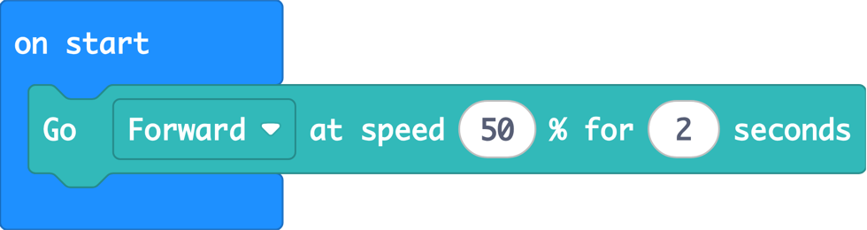
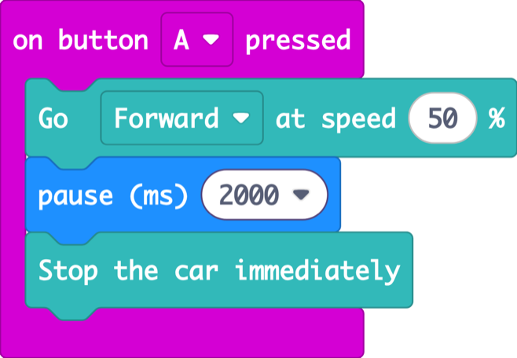
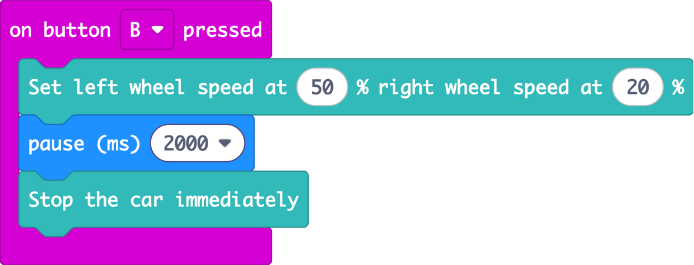
A: the car drives forward for 2 seconds and stops. B: the same, each time you press A. C: the car curves to the right, because the left wheel is turning faster.
The idea. The car remembers its last order. It keeps doing it until a new block tells it something else.
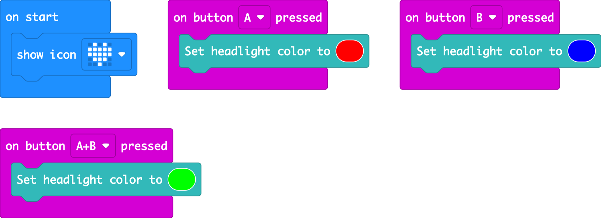
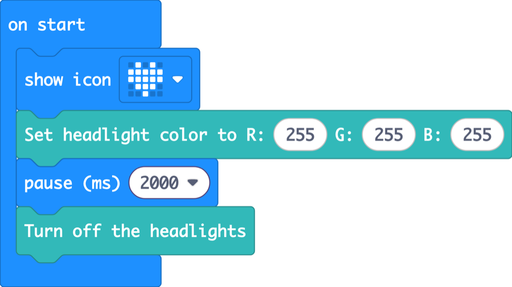
A: the headlights turn red, blue or green as you press. B: the headlights shine white for 2 seconds and go out.
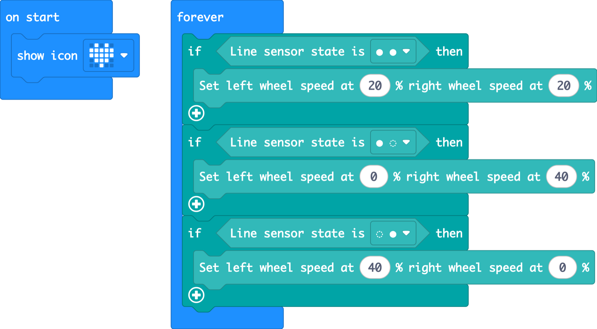
| Block shows | The sensors see |
|---|---|
| ● ● | black under both sensors |
| ● ◌ | black on the left, white on the right |
| ◌ ● | white on the left, black on the right |
| ◌ ◌ | white under both sensors |
The car drives along the line and steers itself back each time the line drifts to one side.
The idea. Stopping one wheel turns the car towards that side.
distance.distance to Sonar distance unit cm. The two round eyes on the front are the sonar.distance < 15 and distance ≠ 0. Build it from and with a comparison on each side. The sonar sends 0 when it has no reading, so the second half skips those.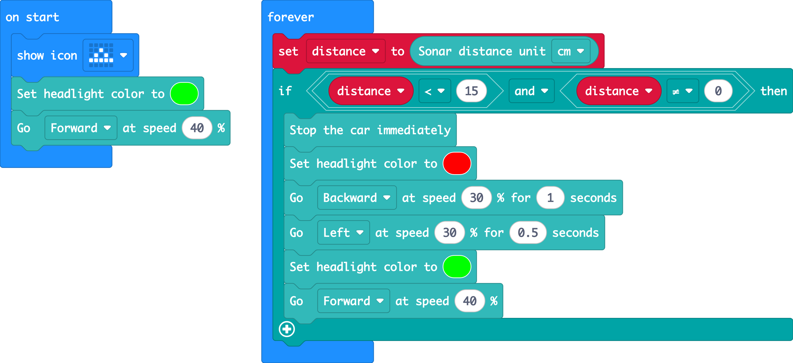
The car drives with green headlights. Close to a box it stops, turns its lights red, reverses, turns left and drives on.
The idea. This is drive until: the car stops because of what a sensor measures.
< 30. Light level runs from 0 for dark to 255 for bright.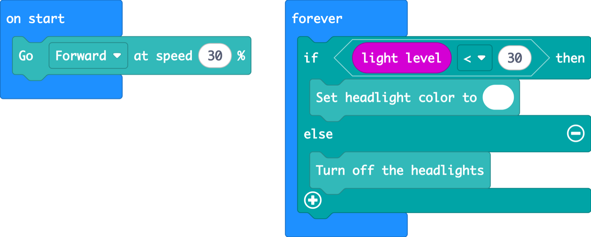
The car drives forward. Cover the micro:bit's screen with your hand, or drive into the tunnel, and the headlights come on.
The idea. The micro:bit measures light with its own LED screen.
left and right.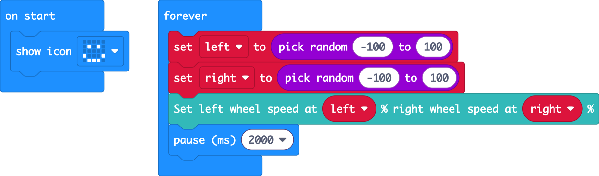
Every 2 seconds the car changes what it is doing: forward, backward, a curve or a spin.
The idea. A negative speed turns the wheel backwards.
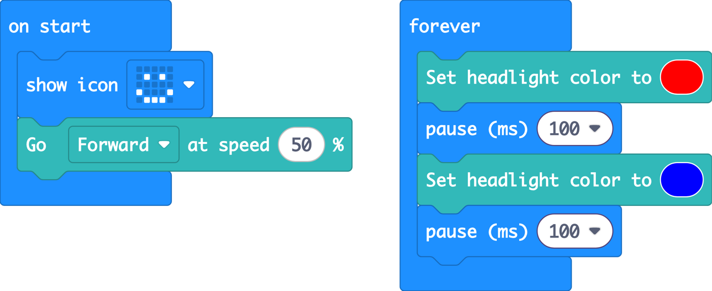
The car drives forward while its headlights flash red and blue.
The idea. The driving block is in on start because the car remembers it. Only the lights need repeating.
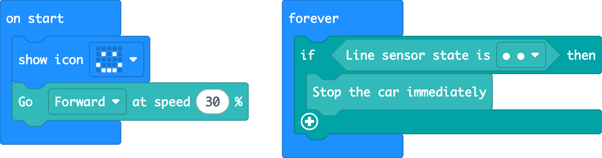
| Block shows | The sensors see |
|---|---|
| ● ● | black under both sensors |
| ● ◌ | black on the left, white on the right |
| ◌ ● | white on the left, black on the right |
| ◌ ◌ | white under both sensors |
The car drives forward and stops on the tape.
The idea. Drive until again, this time with the line sensors.
> 40.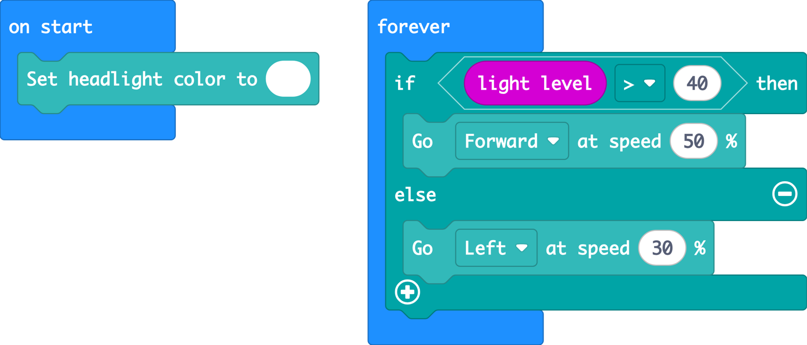
The car spins on the spot. When the torch shines on the micro:bit it drives forward, and it spins again when the light moves away.
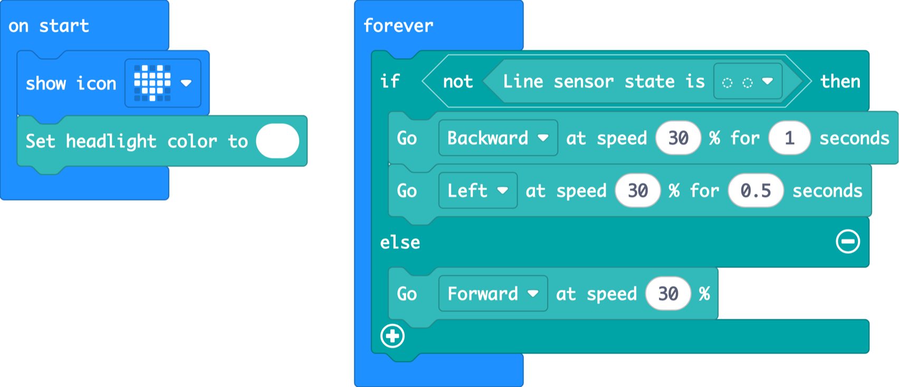
| Block shows | The sensors see |
|---|---|
| ● ● | black under both sensors |
| ● ◌ | black on the left, white on the right |
| ◌ ● | white on the left, black on the right |
| ◌ ◌ | white under both sensors |
The car wanders inside the box. Each time a sensor reaches the tape it reverses, turns and sets off in a new direction.
The idea. ELECFREAKS call this fall-arrest because tape along a table edge keeps the car on the table. A tape box on the floor shows the same idea.
distance.distance to Sonar distance unit cm.distance > 10 and distance < 20. Second condition: distance < 10.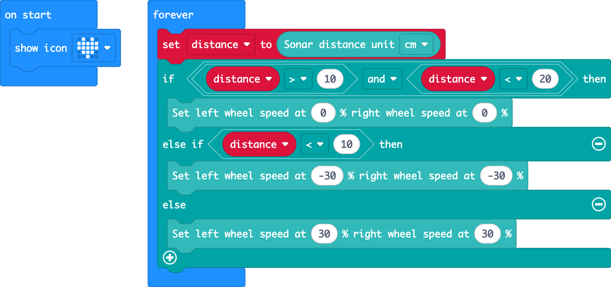
The car follows the book forwards and backs away when the book comes close, keeping a gap of 10 to 20 cm.
The idea. Three answers to one measurement: too close, just right, too far.